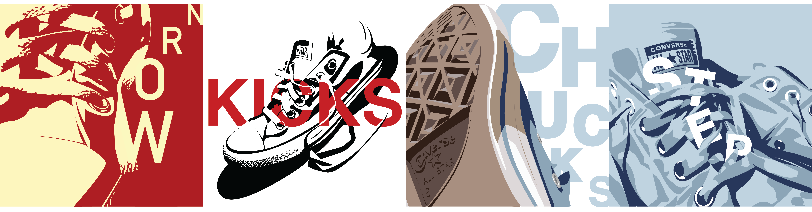

Previous and current works done in other classes
My chosen object for this current project is a pair of old converse. This relates to the theme since it is something that people can grow out of, either because it is too small or too worn out. Especially when it comes to beat up converse, the frayed laces and torn sole show your experience and growth with just a pair of shoes.
This is a continuation of this project, where I used text within my illustrations.
For this past project, we were assigned to come up with three imaginary businesses and create mobile app icons for each one. The first icon on the left represented a cake delivery service app, which also offered other dessert options. The second icon in the middle was for a coffee shop or cafe locator, similar to Yelp. The third icon on the right represented an app that creates outfits for you with your own clothes from your closet.